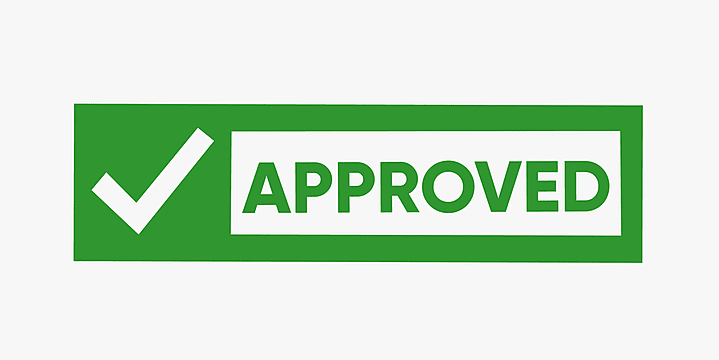
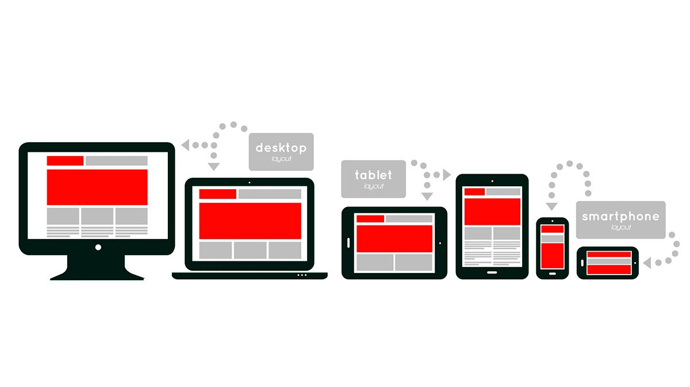
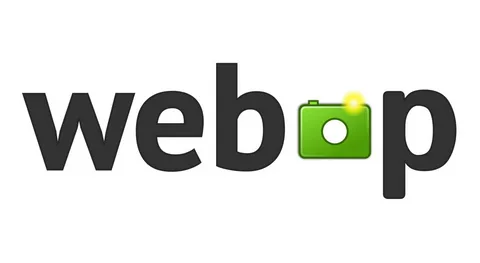

<section class="about-steps">
    <div class="container">
        <h2 class="about-steps__title title title_line title_fz48">Шаги вёрстки</h2>
        <div class="swiper swiperSteps1">
            <div class="about-steps__wrapper swiper-wrapper">
                <div class="about-steps__slide swiper-slide">
                    
                    <h3 class="about-steps__slide-title title title_fz18">Методология БЭМ</h3>
                    <p class="about-steps__slide-descr title title_fz16">Позволяет легко и быстро разрабатывать
                        интерфейсы любой
                        сложности и повторно использовать существующий код, избегая переиспользования кода</p>
                </div>
                <div class="about-steps__slide swiper-slide">
                    <h3 class="about-steps__slide-title title title_fz18">Надёжная вёртска</h3>
                    <p class="about-steps__slide-descr title title_fz16">Качественная вёрстка самый важный показатель
                        верстальщика. верстка не должна ломаться при замене контента, при этом использование
                        минимального колличества строк кода для более оптимизированной вёрстки</p>
                </div>
                <div class="about-steps__slide swiper-slide">
                    <h3 class="about-steps__slide-title title title_fz18">Кроссбраузерный код</h3>
                    <p class="about-steps__slide-descr title title_fz16">Корректное оторбражение всех элементов на
                        странице в любом браузере</p>
                </div>
                <div class="about-steps__slide swiper-slide">
                    <h3 class="about-steps__slide-title title title_fz18">Семантичная верстка</h3>
                    <p class="about-steps__slide-descr title title_fz16">Cемантическая разметка помогает большему
                        количеству пользователей работать с вашим сайтом, включая людей с ограниченными возможностями
                    </p>
                </div>
                <div class="about-steps__slide swiper-slide">
                    <h3 class="about-steps__slide-title title title_fz18">Адаптивная верстка</h3>
                    <p class="about-steps__slide-descr title title_fz16">Правильная адаптация сайта поможет улучшить
                        оторбражение различных элементов на всех экранах любого девайса</p>
                </div>
                <div class="about-steps__slide swiper-slide">
                    <h3 class="about-steps__slide-title title title_fz18">Webp</h3>
                    <p class="about-steps__slide-descr title title_fz16">Новый формат графических файлов, который
                        обеспечивает отличное сжатие изображений при сохранении качества. Чем меньше весит графика ― тем
                        быстрее загружаются страницы сайта, это важно и для поискового продвижения, и для удобства
                        пользователей</p>
                </div>
                <div class="about-steps__slide swiper-slide">
                    <h3 class="about-steps__slide-title title title_fz18">Svg</h3>
                    <p class="about-steps__slide-descr title title_fz16">Лёгкий и масштабируемый, а также его можно
                        модифицировать через код. Они обеспечивают высокое качество изображений независимо от размера
                        экрана</p>
                </div>
                <div class="about-steps__slide swiper-slide">
                    <h3 class="about-steps__slide-title title title_fz18">Валидность и оптимизация</h3>
                    <p class="about-steps__slide-descr title title_fz16">Каждая работа перед сдачей проходит проверку на
                        валидность (W3C) и оптимизацию на Google PageSpeed</p>
                </div>
            </div>
        </div>
    </div>
</section>